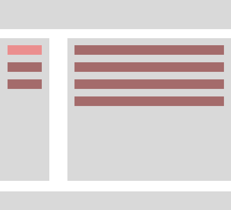
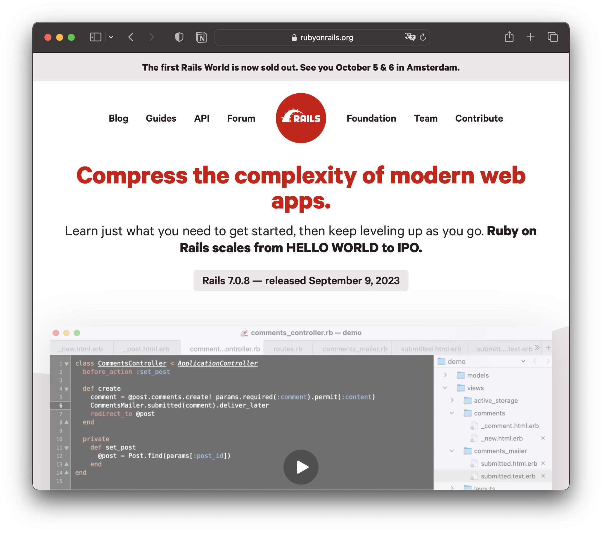
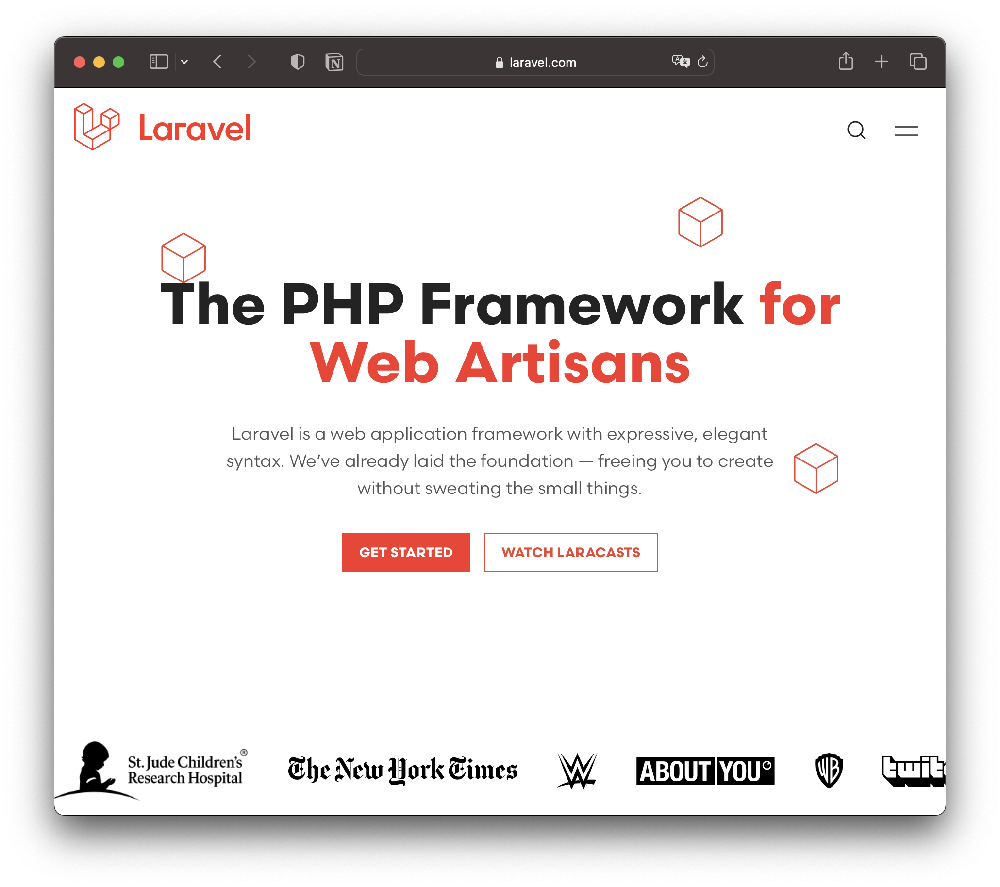
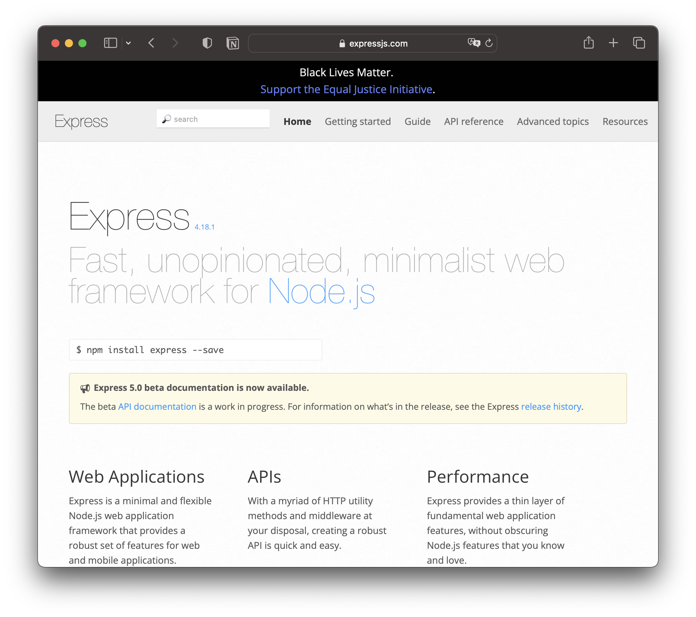
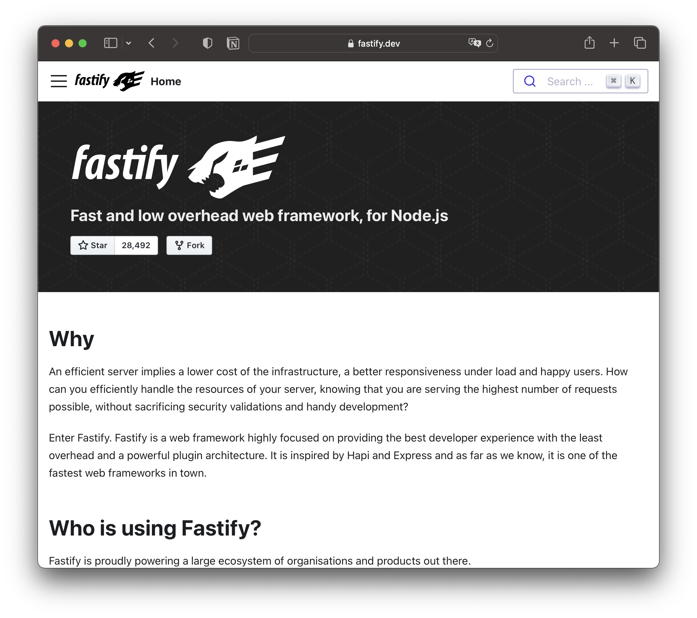

Еще один подход к SSR
|
|
Золотых Алексей
@zolotyh Github | Telegram | Twitter |

Тяжелое утро c HolyJS
1. Когда все пошло не туда
Проблема
document
.querySelector('.button')
.addEventlistener('click', () => ...);
document
.innerHTML = '<button class="button"></button>'
Проблема
document
.innerHTML = '<button class="button"></button>'
document // теперь выполнится
.querySelector('.button')
.addEventlistener('click', () => ...);
Это работает императивно, потому что DOM императивен
- Обновить HTML
- Перенавесить события
И тут появляется state
- Резделяем данные и шаблоны
- Меняются данные, рендерим шаблон, перенавешиваем события
JSON
Давайте передавать не верстку, а данные
Мы работаем с деревьями

.
├── footer
├── header
├── left-sidebar
└── main
.
├── footer
├── header
├── left-sidebar
│ └── navigation
└── main
└── product-table
.
├── footer
├── header
├── left-sidebar
│ └── navigation
│ ├── item1
│ ├── item2
│ └── item3
└── main
└── product-table
├── tr1
├── tr2
└── tr3
.
├── footer
├── header
├── left-sidebar
│ └── navigation
│ ├── item1
│ ├── item2
└── item3
└── main
└── product-table
├── tr1
├── tr2
└── tr3
И мы изобретаем «React»
Мы наконец-то получаем декларативность
const C = ({onClick}) => (<div>
<p onClick={onClick}>Hello World</p>
</div>);
2. Что не так?!
| JS | HTML | |
| Инфо/байт | Hello world | 600 страниц |
|---|---|---|
| Память | 98mb | 29mb |
| LCP Largest Contentful Paint | 180ms | 90ms |
А если грузить весь SPA?
Easy vs Simple
React easy and complicated
Сборка
Ад
Сборка
Ад
Несколько источников правды
- Сервер
- Стейт
- DOM
3. HTML fist подход
Суть
- Данные передаем сразу в HTML
- Есть только локальный стейт
- Все обновления тоже HTML
- Минимум JS
Берем старый фреймворк где c любимыми шаблонами




Оптимизируем
- Запретим переходить по ссылкам и отправлять формы
- Шаманим над HistoryAPI
- Запрашиваем станицу fetch (метод можно взять из формы или аттрибута)
- Отобразим HTML-код ответа, заменив текущий элемент <body> и объединив содержимое элемента <head>
DEMO 1
— А если нам нужно только часть страницы?
— Эмулируем iframe!
Синтаксис
<turbo-frame id="messages">
<a href="/messages/expanded">
Show all expanded messages in this frame.
</a>
<form action="/messages">
Show response from this form within this frame.
</form>
</turbo-frame>
Отложенная загрузка
<turbo-frame id="messages" src="/messages" >
Content will be replaced when the frame becomes visible and /messages has been loaded.
</turbo-frame>
Ленивая загрузка
<turbo-frame id="messages" loading="lazy" src="/messages" >
Content will be replaced when the frame becomes visible and /messages has been loaded.
</turbo-frame>
DEMO 2
<turbo-stream action="append" target="dom_id">
<template>
Content to append to container designated with the dom_id.
</template>
</turbo-stream>
Websocket, HTML Turbo frame request
HTML
<!--HTML from anywhere-->
<div data-controller="hello">
<input data-hello-target="name" type="text">
<button data-action="click->hello#greet">
Greet
</button>
<span data-hello-target="output">
</span>
</div>
JS
// hello_controller.js
import { Controller } from "stimulus"
export default class extends Controller {
static targets = [ "name", "output" ]
greet() {
this.outputTarget.textContent =
`Hello, ${this.nameTarget.value}!`
}
}
JS можно присылать вместе в turbo-frame
Недостатки
- Не для больших компаний
- Не для оптимистов
- Сложные интерфесы с валидацией
- Нагрузка на сервера
4. Выводы
- Иногда технологии ведут не туда
- Мир намного больше чем React/Angular/Vue/Svelte
- HTML first подходит для средних проектов
- HTML first — cпасение для бэкендеров
Время вопросов

|
Золотых Алексей
@zolotyh Github | Telegram | Twitter |